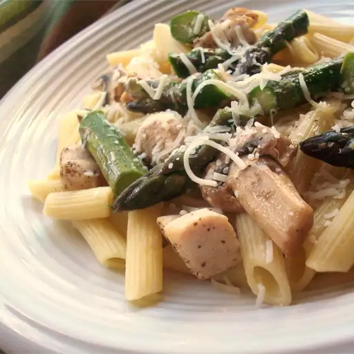

Penne with Chicken and Asparagus

Ingredients
- 1 (16 ounce) package dried penne pasta
- 5 tablespoons olive oil, divided
- 2 skinless, boneless chicken breast halves - cut into cubes
- ¼ teaspoon garlic powder, or more to taste
- salt and ground black pepper to taste
- ½ cup low-sodium chicken broth
- 1 bunch slender asparagus spears, trimmed, cut on diagonal into 1-inch pieces
- 1 clove garlic, thinly sliced
- ¼ cup grated Parmesan cheese
Steps
- Bring a large pot of lightly salted water to a boil. Add penne and cook, stirring occasionally, until tender yet firm to the bite, about 11 minutes. Drain.
- While the pasta is cooking, heat 3 tablespoons oil in a large skillet over medium-high heat. Stir in chicken and season with 1/4 teaspoon garlic powder, salt, and pepper. Cook and stir until chicken is browned and the juices run clear, about 5 minutes. Transfer chicken to a paper towel-lined plate.
- Pour chicken broth into the skillet. Add asparagus, garlic, and another pinch of garlic powder. Season with salt and pepper. Cover and steam until asparagus is just tender, 5 to 10 minutes. Return chicken to the skillet and cook until heated through, 2 to 3 minutes.
- Transfer drained penne to a large bowl. Pour chicken mixture over top and mix until well combined. Let sit for about 5 minutes.
- Stir in remaining 2 tablespoons olive oil, then sprinkle with Parmesan cheese.